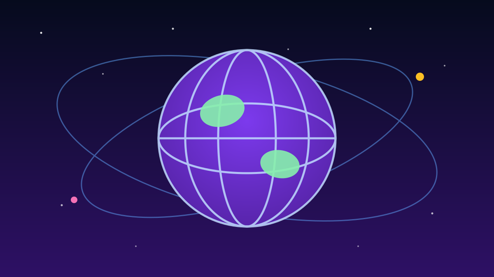

Anak ITB Bikin Popok dari Singkong, Juara Kompetisi Dunia di Atlanta 🌍
📅 13 Oktober 2026⏱️ 1 menit baca
1 / 6

🌍 DUNIA
Singkong bawa anak ITB jadi juara dunia!
Tim mahasiswa ITB menang di Amerika Serikat lawan kampus-kampus top — geser buat spill-nya →
2 / 6
🏆
Juara 1 di Atlanta, Amerika Serikat
Tim Novadüng ITB menyabet Juara 1 Global Student Innovation Challenge (GSIC) 2026 yang digelar Product Development and Management Association (PDMA). Pengumuman pemenang dirilis lewat akun resmi PDMA International.
3 / 6
🍠
Inovasinya: popok bayi dari singkong
Mereka mengusung "Novadüng: A Cassava-Derived Bio-SAP Hybrid Diaper System" — sistem popok bayi hibrida yang ramah lingkungan dan terjangkau, memakai Bio-SAP (Super Absorbent Polymer) berbasis pati singkong lokal.
4 / 6
👥
Siapa aja timnya?
Empat mahasiswa ITB lintas disiplin: Arvyno Pranata Limahardja, Muhammad Dika Hakim, Nadya Saski Wardiman, dan Naila Faridah Wasilah — dibimbing Prof. Sidik Permana. Di final mereka bersaing dengan finalis dari NTU Singapura dan TU Berlin.
5 / 6
🎤
Finalnya di summit internasional
Para finalis mempresentasikan inovasinya di 2026 PDMA Ignite Innovation Summit dan JPIM Research Forum di Atlanta, AS (8–9 Oktober 2026) sebelum dewan juri menetapkan pemenang.
6 / 6
🤔
Efeknya ke lo apa?
Bukti nyata riset kampus bisa tembus panggung dunia — dan bahan bakunya singkong, komoditas lokal yang sering diremehkan. Buat lo yang masih kuliah: skripsi atau PKM lo bisa jadi startup, asal berani bawa ke kompetisi. Gas!
👆 geser kartunya
Gimana menurut lo?
🤖 Artikel ini disusun dengan bantuan AI dari berbagai sumber publik dan telah disunting manusia.